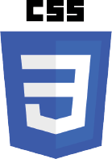
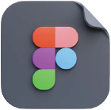

SKILLS
- 

- 
SUHYUN KIM / 2025 / UI UX, WEB PUBLISHER
김수현
1999.10.19
한국조형예술고등학교 졸업
신라대학교 창업예술디자인학부 졸업예정
새로운 것에 도전하고 성장해 나가는
‘UXUI, WEB PUBLISHER 김수현’입니다.
웹퍼블리셔라는 새로운 도전을하며 끊임없이 발전중입니다.
맡은 일에 애정을 가지고 책임감 있게 업무를 수행합니다.
주어진 역할에서 가치를 창출하며, 제 역량을 충분히 발휘하고자 합니다.
click


반응형 홈페이지
2025.03 제작
over view
MUJI 브랜드의 감성에 맞춰 따뜻하고 직관적인 모바일 쇼핑 경험을 디자인했습니다.
카테고리, 매거진, 인기상품, 시리즈별 소개 등 다양한 정보를 분류하고, 사용자의 손가락 동선을 고려한 구성과 간결한 비주얼 요소로 모바일에서도 브랜드 무드와 쇼핑 편의성을 모두 잡도록 디자인하였습니다.
고정형 홈페이지
2025.04 제작

반응형 홈페이지
2025.01 제작

over view
기존 던킨 모바일 웹사이트는 메뉴 정보 접근성은 뛰어났지만, 콘텐츠 구성과 시각적인 위계가 부족해 사용자 경험 측면에서 아쉬움이 있었다고 생각했습니다. 이에 따라 사용자가 직관적으로 원하는 정보를 빠르게 찾고, 브랜드 이미지에 맞는 감성적인 디자인을 경험할 수 있도록 모바일 UI를 재구성하였습니다.
고정형 홈페이지
2025.02 제작